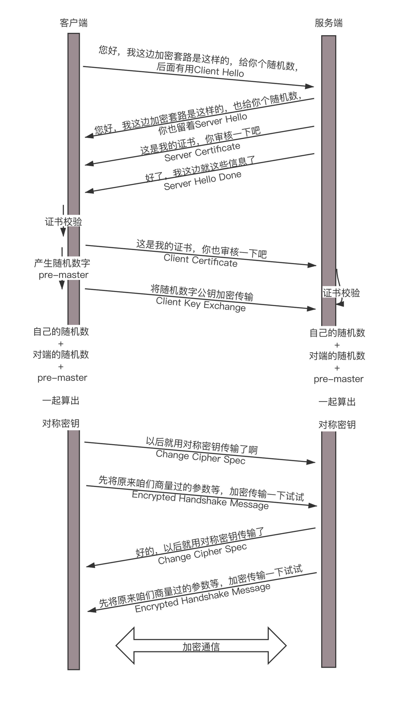

- 00 开篇词 想成为技术牛人？先搞定网络协议！.md.html
- 01 为什么要学习网络协议？.md.html
- 02 网络分层的真实含义是什么？.md.html
- 03 ifconfig：最熟悉又陌生的命令行.md.html
- 04 DHCP与PXE：IP是怎么来的，又是怎么没的？.md.html
- 05 从物理层到MAC层：如何在宿舍里自己组网玩联机游戏？.md.html
- 06 交换机与VLAN：办公室太复杂，我要回学校.md.html
- 07 ICMP与ping：投石问路的侦察兵.md.html
- 08 世界这么大，我想出网关：欧洲十国游与玄奘西行.md.html
- 09 路由协议：西出网关无故人，敢问路在何方.md.html
- 10 UDP协议：因性善而简单，难免碰到“城会玩”.md.html
- 11 TCP协议（上）：因性恶而复杂，先恶后善反轻松.md.html
- 12 TCP协议（下）：西行必定多妖孽，恒心智慧消磨难.md.html
- 13 套接字Socket：Talk is cheap, show me the code.md.html
- 14 HTTP协议：看个新闻原来这么麻烦.md.html
- 15 HTTPS协议：点外卖的过程原来这么复杂.md.html
- 16 流媒体协议：如何在直播里看到美女帅哥？.md.html
- 17 P2P协议：我下小电影，99%急死你.md.html
- 18 DNS协议：网络世界的地址簿.md.html
- 19 HttpDNS：网络世界的地址簿也会指错路.md.html
- 20 CDN：你去小卖部取过快递么？.md.html
- 21 数据中心：我是开发商，自己拿地盖别墅.md.html
- 22 VPN：朝中有人好做官.md.html
- 23 移动网络：去巴塞罗那，手机也上不了脸书.md.html
- 24 云中网络：自己拿地成本高，购买公寓更灵活.md.html
- 25 软件定义网络：共享基础设施的小区物业管理办法.md.html
- 26 云中的网络安全：虽然不是土豪，也需要基本安全和保障.md.html
- 27 云中的网络QoS：邻居疯狂下电影，我该怎么办？.md.html
- 28 云中网络的隔离GRE、VXLAN：虽然住一个小区，也要保护隐私.md.html
- 29 容器网络：来去自由的日子，不买公寓去合租.md.html
- 30 容器网络之Flannel：每人一亩三分地.md.html
- 31 容器网络之Calico：为高效说出善意的谎言.md.html
- 32 RPC协议综述：远在天边，近在眼前.md.html
- 33 基于XML的SOAP协议：不要说NBA，请说美国职业篮球联赛.md.html
- 34 基于JSON的RESTful接口协议：我不关心过程，请给我结果.md.html
- 35 二进制类RPC协议：还是叫NBA吧，总说全称多费劲.md.html
- 36 跨语言类RPC协议：交流之前，双方先来个专业术语表.md.html
- 37 知识串：用双十一的故事串起碎片的网络协议（上）.md.html
- 38 知识串：用双十一的故事串起碎片的网络协议（中）.md.html
- 39 知识串：用双十一的故事串起碎片的网络协议（下）.md.html
- 40 搭建一个网络实验环境：授人以鱼不如授人以渔.md.html
- 加餐1 创作故事：我是如何创作“趣谈网络协议”专栏的？.md.html
- 协议专栏特别福利 答疑解惑1期.md.html
- 协议专栏特别福利 答疑解惑2期.md.html
- 协议专栏特别福利 答疑解惑3期.md.html
- 协议专栏特别福利 答疑解惑4期.md.html
- 协议专栏特别福利 答疑解惑5期.md.html
- 结束语 放弃完美主义，执行力就是限时限量认真完成.md.html
- 捐赠
15 HTTPS协议：点外卖的过程原来这么复杂
用HTTP协议，看个新闻还没有问题，但是换到更加严肃的场景中，就存在很多的安全风险。例如，你要下单做一次支付，如果还是使用普通的HTTP协议，那你很可能会被黑客盯上。
你发送一个请求，说我要点个外卖，但是这个网络包被截获了，于是在服务器回复你之前，黑客先假装自己就是外卖网站，然后给你回复一个假的消息说：“好啊好啊，来来来，银行卡号、密码拿来。”如果这时候你真把银行卡密码发给它，那你就真的上套了。
那怎么解决这个问题呢？当然一般的思路就是加密。加密分为两种方式一种是对称加密，一种是非对称加密。
在对称加密算法中，加密和解密使用的密钥是相同的。也就是说，加密和解密使用的是同一个密钥。因此，对称加密算法要保证安全性的话，密钥要做好保密。只能让使用的人知道，不能对外公开。
在非对称加密算法中，加密使用的密钥和解密使用的密钥是不相同的。一把是作为公开的公钥，另一把是作为谁都不能给的私钥。公钥加密的信息，只有私钥才能解密。私钥加密的信息，只有公钥才能解密。
因为对称加密算法相比非对称加密算法来说，效率要高得多，性能也好，所以交互的场景下多用对称加密。
对称加密
假设你和外卖网站约定了一个密钥，你发送请求的时候用这个密钥进行加密，外卖网站用同样的密钥进行解密。这样就算中间的黑客截获了你的请求，但是它没有密钥，还是破解不了。
这看起来很完美，但是中间有个问题，你们两个怎么来约定这个密钥呢？如果这个密钥在互联网上传输，也是很有可能让黑客截获的。黑客一旦截获这个秘钥，它可以佯作不知，静静地等着你们两个交互。这时候你们之间互通的任何消息，它都能截获并且查看，就等你把银行卡账号和密码发出来。
我们在谍战剧里面经常看到这样的场景，就是特工破译的密码会有个密码本，截获无线电台，通过密码本就能将原文破解出来。怎么把密码本给对方呢？只能通过线下传输。
比如，你和外卖网站偷偷约定时间地点，它给你一个纸条，上面写着你们两个的密钥，然后说以后就用这个密钥在互联网上定外卖了。当然你们接头的时候，也会先约定一个口号，什么“天王盖地虎”之类的，口号对上了，才能把纸条给它。但是，“天王盖地虎”同样也是对称加密密钥，同样存在如何把“天王盖地虎”约定成口号的问题。而且在谍战剧中一对一接头可能还可以，在互联网应用中，客户太多，这样是不行的。
非对称加密
所以，只要是对称加密，就会永远在这个死循环里出不来，这个时候，就需要非对称加密介入进来。
非对称加密的私钥放在外卖网站这里，不会在互联网上传输，这样就能保证这个密钥的私密性。但是，对应私钥的公钥，是可以在互联网上随意传播的，只要外卖网站把这个公钥给你，你们就可以愉快地互通了。
比如说你用公钥加密，说“我要定外卖”，黑客在中间就算截获了这个报文，因为它没有私钥也是解不开的，所以这个报文可以顺利到达外卖网站，外卖网站用私钥把这个报文解出来，然后回复，“那给我银行卡和支付密码吧”。
先别太乐观，这里还是有问题的。回复的这句话，是外卖网站拿私钥加密的，互联网上人人都可以把它打开，当然包括黑客。那外卖网站可以拿公钥加密吗？当然不能，因为它自己的私钥只有它自己知道，谁也解不开。
另外，这个过程还有一个问题，黑客也可以模拟发送“我要定外卖”这个过程的，因为它也有外卖网站的公钥。
为了解决这个问题，看来一对公钥私钥是不够的，客户端也需要有自己的公钥和私钥，并且客户端要把自己的公钥，给外卖网站。
这样，客户端给外卖网站发送的时候，用外卖网站的公钥加密。而外卖网站给客户端发送消息的时候，使用客户端的公钥。这样就算有黑客企图模拟客户端获取一些信息，或者半路截获回复信息，但是由于它没有私钥，这些信息它还是打不开。
数字证书
不对称加密也会有同样的问题，如何将不对称加密的公钥给对方呢？一种是放在一个公网的地址上，让对方下载；另一种就是在建立连接的时候，传给对方。
这两种方法有相同的问题，那就是，作为一个普通网民，你怎么鉴别别人给你的公钥是对的。会不会有人冒充外卖网站，发给你一个它的公钥。接下来，你和它所有的互通，看起来都是没有任何问题的。毕竟每个人都可以创建自己的公钥和私钥。
例如，我自己搭建了一个网站cliu8site，可以通过这个命令先创建私钥。
openssl genrsa -out cliu8siteprivate.key 1024
然后，再根据这个私钥，创建对应的公钥。
openssl rsa -in cliu8siteprivate.key -pubout -outcliu8sitepublic.pem
这个时候就需要权威部门的介入了，就像每个人都可以打印自己的简历，说自己是谁，但是有公安局盖章的，就只有户口本，这个才能证明你是你。这个由权威部门颁发的称为证书（Certificate）。
证书里面有什么呢？当然应该有公钥，这是最重要的；还有证书的所有者，就像户口本上有你的姓名和身份证号，说明这个户口本是你的；另外还有证书的发布机构和证书的有效期，这个有点像身份证上的机构是哪个区公安局，有效期到多少年。
这个证书是怎么生成的呢？会不会有人假冒权威机构颁发证书呢？就像有假身份证、假户口本一样。生成证书需要发起一个证书请求，然后将这个请求发给一个权威机构去认证，这个权威机构我们称为CA（ Certificate Authority）。
证书请求可以通过这个命令生成。
openssl req -key cliu8siteprivate.key -new -out cliu8sitecertificate.req
将这个请求发给权威机构，权威机构会给这个证书卡一个章，我们称为签名算法。问题又来了，那怎么签名才能保证是真的权威机构签名的呢？当然只有用只掌握在权威机构手里的东西签名了才行，这就是CA的私钥。
签名算法大概是这样工作的：一般是对信息做一个Hash计算，得到一个Hash值，这个过程是不可逆的，也就是说无法通过Hash值得出原来的信息内容。在把信息发送出去时，把这个Hash值加密后，作为一个签名和信息一起发出去。
权威机构给证书签名的命令是这样的。
openssl x509 -req -in cliu8sitecertificate.req -CA cacertificate.pem -CAkey caprivate.key -out cliu8sitecertificate.pem
这个命令会返回Signature ok，而cliu8sitecertificate.pem就是签过名的证书。CA用自己的私钥给外卖网站的公钥签名，就相当于给外卖网站背书，形成了外卖网站的证书。
我们来查看这个证书的内容。
openssl x509 -in cliu8sitecertificate.pem -noout -text
这里面有个Issuer，也即证书是谁颁发的；Subject，就是证书颁发给谁；Validity是证书期限；Public-key是公钥内容；Signature Algorithm是签名算法。
这下好了，你不会从外卖网站上得到一个公钥，而是会得到一个证书，这个证书有个发布机构CA，你只要得到这个发布机构CA的公钥，去解密外卖网站证书的签名，如果解密成功了，Hash也对的上，就说明这个外卖网站的公钥没有啥问题。
你有没有发现，又有新问题了。要想验证证书，需要CA的公钥，问题是，你怎么确定CA的公钥就是对的呢？
所以，CA的公钥也需要更牛的CA给它签名，然后形成CA的证书。要想知道某个CA的证书是否可靠，要看CA的上级证书的公钥，能不能解开这个CA的签名。就像你不相信区公安局，可以打电话问市公安局，让市公安局确认区公安局的合法性。这样层层上去，直到全球皆知的几个著名大CA，称为root CA，做最后的背书。通过这种层层授信背书的方式，从而保证了非对称加密模式的正常运转。
除此之外，还有一种证书，称为Self-Signed Certificate，就是自己给自己签名。这个给人一种“我就是我，你爱信不信”的感觉。这里我就不多说了。
HTTPS的工作模式
我们可以知道，非对称加密在性能上不如对称加密，那是否能将两者结合起来呢？例如，公钥私钥主要用于传输对称加密的秘钥，而真正的双方大数据量的通信都是通过对称加密进行的。
当然是可以的。这就是HTTPS协议的总体思路。

当你登录一个外卖网站的时候，由于是HTTPS，客户端会发送Client Hello消息到服务器，以明文传输TLS版本信息、加密套件候选列表、压缩算法候选列表等信息。另外，还会有一个随机数，在协商对称密钥的时候使用。
这就类似在说：“您好，我想定外卖，但你要保密我吃的是什么。这是我的加密套路，再给你个随机数，你留着。”
然后，外卖网站返回Server Hello消息, 告诉客户端，服务器选择使用的协议版本、加密套件、压缩算法等，还有一个随机数，用于后续的密钥协商。
这就类似在说：“您好，保密没问题，你的加密套路还挺多，咱们就按套路2来吧，我这里也有个随机数，你也留着。”
然后，外卖网站会给你一个服务器端的证书，然后说：“Server Hello Done，我这里就这些信息了。”
你当然不相信这个证书，于是你从自己信任的CA仓库中，拿CA的证书里面的公钥去解密外卖网站的证书。如果能够成功，则说明外卖网站是可信的。这个过程中，你可能会不断往上追溯CA、CA的CA、CA的CA的CA，反正直到一个授信的CA，就可以了。
证书验证完毕之后，觉得这个外卖网站可信，于是客户端计算产生随机数字Pre-master，发送Client Key Exchange，用证书中的公钥加密，再发送给服务器，服务器可以通过私钥解密出来。
到目前为止，无论是客户端还是服务器，都有了三个随机数，分别是：自己的、对端的，以及刚生成的Pre-Master随机数。通过这三个随机数，可以在客户端和服务器产生相同的对称密钥。
有了对称密钥，客户端就可以说：“Change Cipher Spec，咱们以后都采用协商的通信密钥和加密算法进行加密通信了。”
然后发送一个Encrypted Handshake Message，将已经商定好的参数等，采用协商密钥进行加密，发送给服务器用于数据与握手验证。
同样，服务器也可以发送Change Cipher Spec，说：“没问题，咱们以后都采用协商的通信密钥和加密算法进行加密通信了”，并且也发送Encrypted Handshake Message的消息试试。当双方握手结束之后，就可以通过对称密钥进行加密传输了。
这个过程除了加密解密之外，其他的过程和HTTP是一样的，过程也非常复杂。
上面的过程只包含了HTTPS的单向认证，也即客户端验证服务端的证书，是大部分的场景，也可以在更加严格安全要求的情况下，启用双向认证，双方互相验证证书。
重放与篡改
其实，这里还有一些没有解决的问题，例如重放和篡改的问题。
没错，有了加密和解密，黑客截获了包也打不开了，但是它可以发送N次。这个往往通过Timestamp和Nonce随机数联合起来，然后做一个不可逆的签名来保证。
Nonce随机数保证唯一，或者Timestamp和Nonce合起来保证唯一，同样的，请求只接受一次，于是服务器多次收到相同的Timestamp和Nonce，则视为无效即可。
如果有人想篡改Timestamp和Nonce，还有签名保证不可篡改性，如果改了用签名算法解出来，就对不上了，可以丢弃了。
小结
好了，这一节就到这里了，我们来总结一下。
加密分对称加密和非对称加密。对称加密效率高，但是解决不了密钥传输问题；非对称加密可以解决这个问题，但是效率不高。
非对称加密需要通过证书和权威机构来验证公钥的合法性。
HTTPS是综合了对称加密和非对称加密算法的HTTP协议。既保证传输安全，也保证传输效率。
最后，给你留两个思考题：
HTTPS协议比较复杂，沟通过程太繁复，这样会导致效率问题，那你知道有哪些手段可以解决这些问题吗？
HTTP和HTTPS协议的正文部分传输个JSON什么的还好，如果播放视频，就有问题了，那这个时候，应该使用什么协议呢？
欢迎你留言和我讨论。趣谈网络协议，我们下期见！
© 2019 - 2023 Liangliang Lee. Powered by gin and hexo-theme-book.